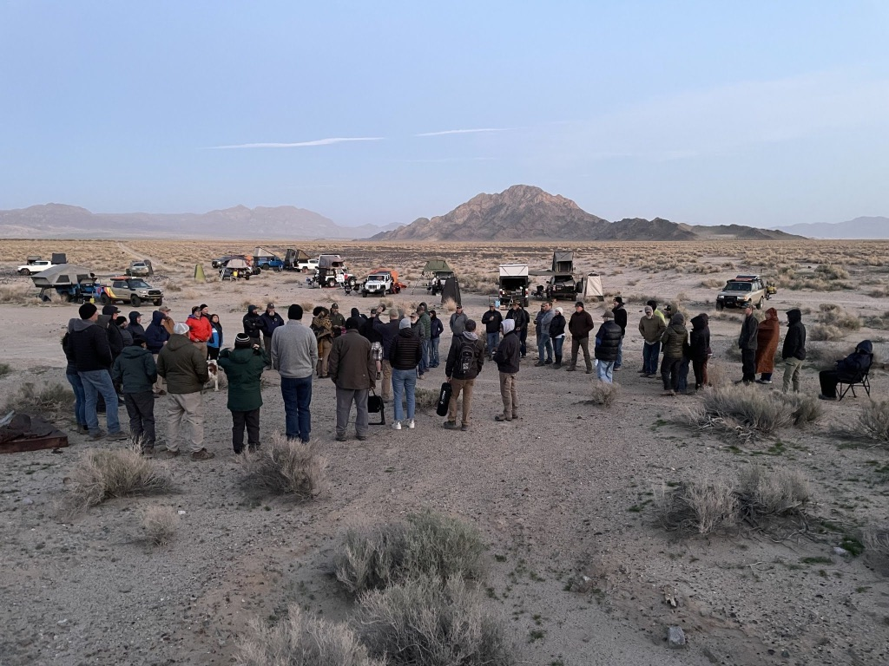
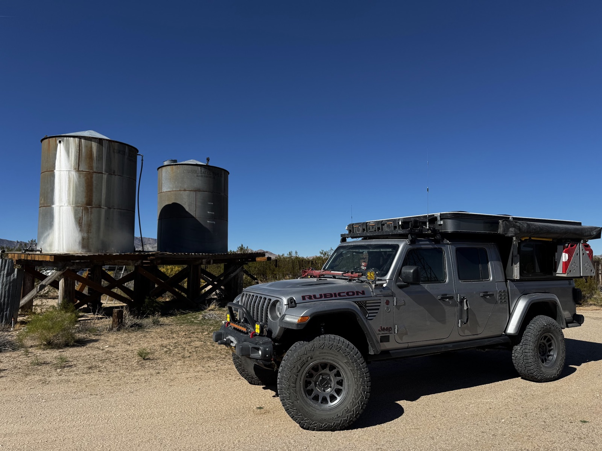
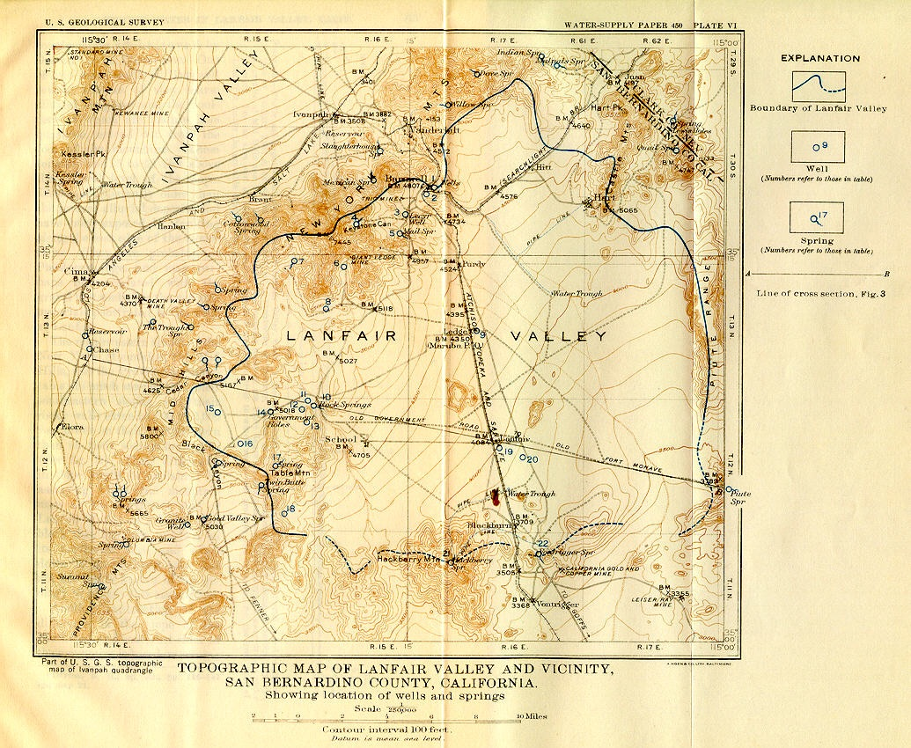

Mojave Spring TrailGuardian
Exciting news - The dates for the first 2026 Mojave Overlandbound Trail Guardian Event are confirmed for April 15-19! We are set to head into the desert to help the National Parks.
🚨 Rally Point Published
The Cleanup Rally Point has been published - please RSVP if you are planning on going so Kent has an accurate count.
Go to Rally Point
(Note: This link WORKS ONLY FROM THE APP)
East Bay Convoy
We will organize a convoy and some "time to play" for the East Bay crew - watch here for information and a separate Rally point for that.
Two Spring Projects
Dates: April 17-19, 2026
Trip Leader: Kent R (Message @Kent R for questions)
Project and event details to follow with the attendee message once everyone RSVP’s. There are separate instructions for each project; once participants are determined, separate messages will be sent for each.
Project 1: Dispersed Campsite Collection
(Lead: Barclay, 20 members needed)
Finish collecting data on dispersed campsites. Groups of two will be assigned, with a team leader for every five groups. Hoping prior fall participants will sign up again. Everyone will arrive at their designated staging areas Thursday April 16. One half of groups will be at the OX Ranch and the other will meet at the Green Mill Campsite on the east.
Project 2: OX Ranch Repairs
(Lead: Mike Keith, 10-15 members needed)
Repairs at the OX Ranch including roof repairs and siding work. The OX Ranch is on the National Register of Historic Places. Read more about the history.
The OX Ranch
No we are not Going to Texas.
The OX Ranch on Lanfair Road in the East Mojave Desert is a historic, private ranch known for its significant role in regional ranching, its headquarters complex, and its presence near the old Mojave Trail, offering a glimpse into desert ranching life, distinct from the well-known Texas hunting ranch also called OX Ranch. This California location is part of the Mojave National Preserve's landscape, offering stark desert beauty, while the Texas ranch is a large hunting/event venue, so it's important to distinguish between the two.
Read more on digital-desert.com
A Historic Map
📍 Rally Point & Sign-up
- Trip Website: Mojave Spring TrailGuardian
- OB Forum: Rally Point Thread (RSVP Here)
- Convoy Info: We will organize a convoy and some "time to play" for the East Bay crew - watch here for information and a separate Rally point for that.
Change of Plans
If you RSVP'd and decide not to go, please update your RSVP to "NOT GOING" to open up a spot and let us know.
Trip Logistics
Dates
Wednesday, April 15 – Sunday, April 19, 2026
As usual we plan to convoy on Wednesday so we have some extra time to play. Feel free to join for part of the time if you can't make the full trip. Some of us may stay an extra day.
Meet-up Location
Date: Wednesday, Apr 15, 2026
Time: 6:30 AM
Location: McDonald’s at Santa Rita and Highway 580 E.
37°42'02.9"N 121°52'10.7"W
37.700795, -121.869642
Basecamp
Basecamp will be at the OX Ranch on Lanfair Road.
35°12'10.9"N 115°12'06.0"W
35.203015, -115.201677
Expected Weather in April
Current Weather
Expected Trip Weather
Get Ready Before We Go
🛑 SAFETY REQUIREMENTS
Rear Amber Chase Light and HAM Radio communications are REQUIRED to travel with the group.
Why Amber Chase Lights?
Dusty trails are common – amber lights penetrate dust far better than white or red, helping prevent rear-end collisions in low visibility. Learn more about Why Chase Lights?
HAM Radio
Program to 146.460 MHz (simplex). Handhelds work great even without a license for listening.
If you don't have a ham radio yet, check out our guide to get started.
Other Essentials
- Offline navigation (download GPX from Rally Point – limited/no cell service)
- Extra fuel
- Off-road tires, full-size spare, recovery gear
- Plenty of water, desert prep, meds, emergency kit
... Let the adventure
begin ...
making memories ...